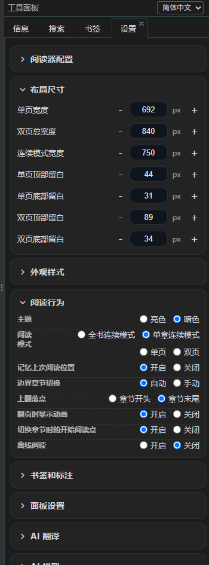

阅读设置总览
点工具栏的「设置」打开面板。改动立即生效，并自动保存。
八个分区
| 分区 | 管什么 |
|---|---|
| 阅读配置 | 配置档的选择、另存与删除 |
| 布局 | 各模式的宽度，以及分页模式的上下留白 |
| 外观 | 字体、字号、颜色、背景、行距、字距、段间距、自定义 CSS |
| 阅读行为 | 明暗主题、阅读模式、记忆上次阅读位置、边界换章、翻页动画、离线阅读、选中弹出 |
| 书签与标注 | 新建标注的默认颜色、笔记预览方式 |
| 面板 | 书签与搜索结果的每页条数 |
| AI 模型 | AI 翻译与 AI 对话共用的 AI 服务 |
| AI 翻译 | 翻译模式、范围、译文主题、源语言与目标语言 |

保存与恢复
- 所有改动立即保存到当前配置档，不需要点「保存」。
- 改动只影响阅读器，不会改动书本身的文件。
- 想保留多套设置，用 阅读配置档。